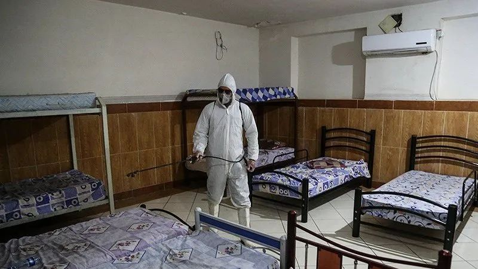
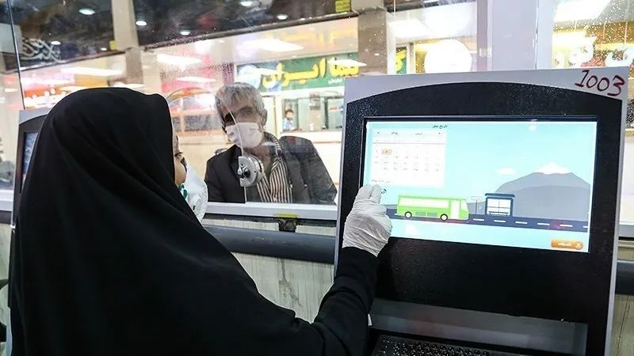
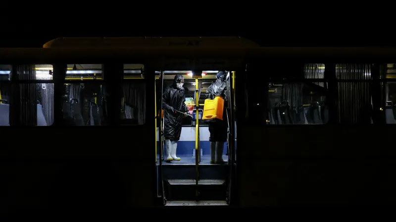

德黑兰疫区十日记
原文链接 备份链接 编者按 本文是作者自2月21日至3月1日在伊朗首都德黑兰写下的生活日记。 对比其他国家，伊朗异常紧张的国际处境、多年制裁下脆弱的经济和深入到社会生活方方面面的宗教传统，都影响着它面对疫情的态度。从2月20日晚间伊朗首次 …

伊朗卫生部7日公布，截至当地时间7日上午，伊朗新增新冠肺炎确诊病例1076例，累计病例数升至5823例，其中死亡145例，治愈1669例。
地处欧亚大陆“十字路口”的伊朗，向外扩散的风险日渐增加。
实习记者｜ 戴敏洁
一次逃离
3月5日晚上七点，住在伊朗首都德黑兰的中文老师崔思琪拖着行李，走进了位于甘肃兰州新区的隔离单间。从德黑兰飞往兰州的飞机单程要5个小时，但此刻距离他从德黑兰机场等待起飞，已经过去将近24小时。他终于“逃离”了德黑兰。
脸上的口罩是登机前医护人员给他戴上的，勒得他脸疼，现在终于可以扯下来了。他一路小心翼翼，登机前就把手机被放进塑料袋包好，不再拿出来。在飞机上，他感觉口罩位置不对，像是扣进骨头里，他一睁一闭会有眼泪冒出来，但他不敢乱动。同事给了纸巾后，他稍微擦了擦，担心会把病毒揉进眼睛。他还戴着权作护目镜的泳镜，但和口罩一起勒得难受，呼吸又困难，摘掉之后，他索性尽量闭眼。
泳镜是崔思琪在回国前两天去超市买的，去的路上，他戴上新旧两个口罩、墨镜，头蒙塑料袋，到了超市，两个伊朗工作人员不解：为什么搞成这样？他们甚至都没戴口罩。
崔思琪回国的决定是2月29号那天下的。2月19日，伊朗政府证实境内首例感染新冠病毒病例，之后一周，每天的新增病例十几或是几十例，但到27日后突然报新增超过百例，并且以几何级数增长——28日143例。

29日早上，大使馆的人曾联系过崔思琪，问他生活是否有困难，是否有回国的意愿。他只说，热水器坏了，不敢让人来修。崔思琪在德黑兰的住所比较偏僻，周围没有什么人，崔思琪认为，相对安全。他在菜市场买足了食物，足够一个月生活。
没想到29日当天，伊朗就又新增确诊205例。在国内的家人和朋友看到新闻，万分担忧，让崔思琪赶紧回国。当晚，崔思琪联系了使馆人员得知，这次包机结束以后可能就没有了。崔思琪想，不能再拖了，他填了回国登记表。
3月3日，大使馆建了微信群，把所有人的护照信息汇总给航空公司。第二天，崔思琪和另外145名中国公民一起登上了飞往兰州的商业包机。
从摆渡车上飞机前，四个医护人员围住他：换口罩、喷消毒液、洗手、量体温，再检查一遍他的机票。一路上，崔思琪填了三个健康申报审查表，量了四次体温，抽了一次血，测了一个咽喉，还经历了一次惊心动魄：飞机落地兰州后，崔思琪听到了海关人员问前排乘客：发烧几天了？崔思琪的斜后方还坐着一个发烧的乘客。所幸崔思琪回想，一路上没有听到他们咳嗽，这些有疑似症状的人集中先下了飞机。崔思琪估计，这些人应该去医院了。
旅程漫长，“有时是等待所有人手续繁杂的登机，有时是等待对所有人的盘查，有时是不知道在等什么。”崔思琪告诉本刊。尽管路上耽搁了许多时间，但至少他顺利地回到了中国。
中国旅游博主龙微则没那么幸运，他还在德黑兰等待回国。他1月17日到达伊朗，已经在伊朗境内待了一个多月。龙微告诉本刊，此前，他曾购买俄航3月8日的机票回国，之后机票价格涨了十倍，从两千多到两万多。但3月6日，购买相同航班的中国人去登机，德黑兰机场却不给办理登机牌了，龙微只好取消了机票。他加入了中国驻伊朗大使馆统计回国意愿的群，很快500人的群就满了，但回国的航班消息还遥遥无期。

在龙微的镜头下，菜市场的店面依旧全部开着，人们如常购物、搬运和交谈，只有偶尔一两个路人戴着口罩。崔思琪离开前，他看到平常去买馕的店依旧热闹，馕是当地人的主食，店里做出来的馕扣在铁架子上，顾客付完钱用手端上馕就走了，一会儿现金一会儿馕，崔思琪觉得害怕，他改吃每次都需要煮熟的意大利面了。
崔思琪在兰州隔离的第二天，当地时间3月7日中午，伊朗卫生部通报称，过去24小时，伊朗新增1076例新冠肺炎确诊病例，累计确诊5823例。而在此前的3月2日，伊朗最高领袖哈梅内伊的顾问委员会一名委员因感染新冠肺炎去世。3日，伊朗紧急卫生服务部负责人感染了新冠病毒，伊朗首位女副总统苏梅·埃卜特卡尔也被感染。伊朗总统鲁哈尼表示，新冠肺炎病毒几乎传播到所有省份。
一座圣城和两次聚集
伊朗有确诊新冠病毒感染者的消息，出现在2月19日，崔思琪在刷Instagram时看到。最初两例确诊病例都在圣城库姆，疫情也由此爆发。
库姆位于伊朗西北部，是伊斯兰教什叶派圣地，也是陆路交通中心，常居人口120万，每年前往该地参加宗教活动的人数达到百万级别。伊斯兰教什叶派版本的《圣训》中称，“若通往天堂有八扇门，三扇就在库姆”。
崔思琪曾去过库姆旅游，他看到在清真寺里，信众在里面睡觉休息、诵读经文和圣训，面向圣城方向礼拜，这是当地信众的日常生活。等到礼拜日，人员更加密集，前来朝圣的民众还有亲吻和触摸圣坛的习惯，容易变成一个巨大的传染源。
在宣布确诊第一例新冠病毒病例后，伊朗政府下令关闭疫情最严重地区库姆的圣坛和清真寺，但该市的神职人员抵制了数天。2月22日，在伊朗的官方新闻里，库姆圣墓管理人萨伊迪教长反对关闭圣墓，“圣墓不仅不能关闭，而且要尽量鼓励信众前往”，因为“圣地是治愈人的地方，不是让人染病的地方”。

长期关注伊朗问题的国际事务观察者张育轩告诉本刊，伊朗的政教合一的体制使得宗教人士有很大权力，即便政府想关闭宗教场所也不是容易的事，而未关闭宗教场所使得疫情进一步扩散。
在伊朗当局取消了原定于3月初举行的为期三天的宗教节日后，库姆居民仍然拒绝遵守省长安全委员会关闭圣坛的命令。2月28日，伊朗在全国范围内取消了41年来从未中断过的周五聚礼。
但库姆至今没有封城，市民出行没有管制。即使清真寺被关闭，虔诚的人民仍会选择到另一个城市的清真寺进行朝拜，这又会导致库姆疫情向外扩散。虽然周五的大礼拜被要求取消，但很多信众周内其他时间也会做礼拜，并且笃信去清真寺进行集体仪式。
伊朗总统鲁哈尼在2月26日的内阁会议上表示，伊朗没有计划对任何城镇实施卫生隔离。2月27日，领袖哈梅内伊在冠状病毒的讲话视频中，表示力挺卫生部，支持后者“不隔离疫区城市”的政策。崔思琪看到资料，每日库姆和德黑兰有30万人次的往返，而商场、医院、地铁的祈祷室都正常开放，地铁和集市的人群依旧集聚。

崔思琪还担忧地回想起两次大规模聚集活动：2月11日的伊朗伊斯兰革命四十一周年的大游行，以及2月21日的议会选举活动。
伊朗的国庆大游行从当年的革命地德黑兰大学附近的革命广场开始，一路向西，走三四个地铁站的距离，到达自由塔广场。整条马路上都涌着人，人挨着人，车辆无法穿行。崔思琪觉得，病毒当时已经潜伏在了人群里。
即使2月19日出现确诊，伊朗政府依然不愿意取消21日的议会选举。崔思琪在电视里看到，人们纷纷去投票站投票，几乎都没有口罩。
“疫情在伊朗实际上1月就发生了，但近期伊朗的局势动荡，政府直到2月19日才公布疫情。”中国国际问题研究院特邀研究员、中国驻伊朗前任大使华黎明说，“在这样的形势下，伊朗政府正面对持续不断的反政府示威游行，为了确保政治安全，政府并未取消大游行和选举。”
在印权斌看来，政府未迅速采取隔离等应对疫情的硬措施，还为了要保障经济和社会稳定。一旦封城停工，势必让已经在美国制裁压力下脆弱的伊朗经济更加崩溃，而且会导致民众恐慌哄抢物资，进而导致物资短缺引发社会动荡。保经济与绝对控制疫情，只能顾一头。

印权斌告诉本刊，德黑兰疫情爆发第一周，咖啡馆依旧人来人往，公共场合人流量大，一方面是因为政府轻描淡写，另一方面是伊朗最近面临遭受制裁、物价上涨很多困难，而冠状病毒也只是困难中的一个而已。
2月28日，世卫组织将新冠肺炎疫情全球风险级别上调至“非常高”。
扩散的风险
2月19日，听到库姆有两人确诊感染新冠的消息后，崔思琪去超市买菜，跟门口卖花的阿富汗人说了情况，让他们也小心些。他的波斯语表达不清，对方以为他说两人死去了。崔思琪解释，只是确诊。没想到几个小时后，两个确诊者就去世了。
当天下午四点，崔思琪跑到药店买了30个口罩，总共花了30万里亚尔，约合人民币15块钱。第二天他想再买点消毒液，上午九点，他刚走进药店，对方就摆摆手：口罩卖光了。他跑到另一家店，口罩限购4个。之后一个学生告诉崔思琪，德黑兰有些口罩涨到了人民币15块钱——在德黑兰，这接近普通家庭单人一周的饭钱。崔思琪想，这或许是路上许多人仍然不戴口罩的原因。
27岁的伊朗人索尼娅失业已久，她买不起这价格昂贵的口罩。她有工业工程的硕士学位，但只能在伊朗兼职做导游。今年1月10日，白宫在一份声明中说，总统特朗普当天签署行政令，授权财政部制裁包括建筑、矿业、制造业和纺织业在内的多个伊朗经济行业。美国和伊朗的关系更加紧张，很多游客不再前来伊朗旅游，索尼娅接不到工作，也基本上没有收入。
2月28日，索尼娅发烧了，不停咳嗽。她前往医院就医，医生说，只是流感，不用治疗。索尼娅依旧感到焦虑，由于没有试剂，她不能保证医生的诊断是否可信。但她只能回家，自己隔离。
张育轩告诉本刊，伊朗能应付基本药物和治疗，但在传染病防治和应对上能力较弱。而伊朗的医疗进口商表示，由于美国的经济制裁，他们没有办法买到检测制剂。

中国向伊朗政府和人民提供援助
2月21日，国际反洗钱金融行动特别工作组将伊朗列入了黑名单。印权斌告诉本刊，国际反洗钱机构已经多次给伊朗宽限，要其政府通过国际反洗钱协议。虽然伊朗议会通过协议，但专家会议一直不通过，最后国际反洗钱机构忍无可忍，将伊朗列入黑名单。列入黑名单后，与伊朗的所有交易都将面临更严格的审查。伊朗医疗设备进口商协会理事法拉说：“许多国际企业愿意向伊朗提供检测新冠试剂盒，但我们无法向他们汇款。”截至3月6日，伊朗有近16000例疑似病例未得到确诊。
在家隔离的索尼娅告诉龙微，很多年轻人在医院里得不到救治。而她得不到检测试剂，也万分焦虑，3月5日她发消息给龙微：“这一周伊朗疫情将达到高峰，这将会是一场灾难，你必须早点离开！”
伊朗地处欧亚大陆的“十字路口”，由于其他国家的什叶派民众到库姆朝觐，疫情或许还将继续扩散。目前，伊拉克、黎巴嫩、阿富汗、巴林、科威特的确诊病例都曾前往伊朗。华黎明说，如果伊朗不彻底封锁边境，不断然采取措施，可能会在中东出现大规模蔓延。
_（崔思琪为化名，本文图片来自parstoday官网）_
⊙文章版权归《三联生活周刊》所有，欢迎转发到朋友圈，转载请联系后台。
点击图片，一键下单
「*营造学社*」

***************▼ 点击阅读原文，******************************进入周刊书店******************************，购买更多好书。***************
原文链接 备份链接 编者按 本文是作者自2月21日至3月1日在伊朗首都德黑兰写下的生活日记。 对比其他国家，伊朗异常紧张的国际处境、多年制裁下脆弱的经济和深入到社会生活方方面面的宗教传统，都影响着它面对疫情的态度。从2月20日晚间伊朗首次 …
原文链接 备份链接 图片来源：阿纳多卢通讯社 “ 鲁哈尼强调，国家对疫情高度警惕，但不会封闭任何地区或城市，只会根据情况采取限制性措施。 ” 随着伊朗国内新冠肺炎确诊人数持续上升，该国政坛高层也受到病毒“入侵”。 2月27日，伊朗伊斯兰共 …
原文链接 备份链接 “伊朗应对地震很有一套， 但是传染病防控，他们实在没经验” 视频截图：哈利其（图左）在发布会上不停擦汗。 当地时间2月25日，伊朗卫生部发言人、副部长哈利其（Iraj Harirchi）新冠病毒检测呈阳性。稍晚些时候， …
原文链接 备份链接 据路透社报道，2月22日，伊朗卫生部发言人贾汉普尔表示，伊朗新检测出10例新冠肺炎病例，其中1例已经死亡，伊朗确诊病例总数达到28例。 “伊朗所有城市可能都出现冠状病毒” 贾汉普尔表示，新增的10个被确诊病例中，8个 …
原文链接 备份链接 现在校园里还没有人戴口罩，但国内的亲人总是打电话说美国疫情严重，出门一定要戴口罩，这让他非常为难。 文｜李 莹 今年春节，我到美国旅游，结果因为新冠肺炎疫情，回程航班被取消了……一言难尽。这是我滞留美国的第42天，西 …